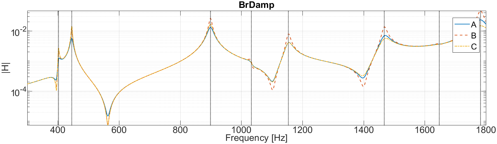
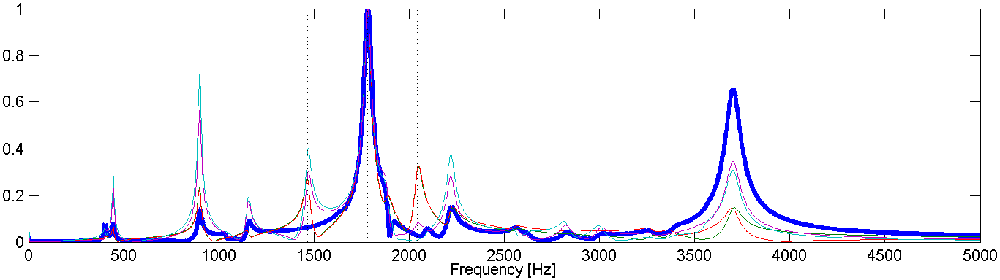

PDF Index
PDF Index|
Contents
Functions
PDF Index |
Pour aider aux différentes étapes, on fera appel dans MATLAB à des fonctions de la Structural Dynamics Toolbox (sdt) pour le calcul élément
Les données sont normalement disponibles
cd('X:\Enseignants\balmes\MeVib') % Ou cd('\\pa-sciserv1.paris.ensam.fr\Echange\Enseignants\balmes\MeVib') startup % modifie le PATH de MATLAB pour inclure SDT
L'objet de cette partie est de comprendre l'influence des termes de la formule (1) pour le calcul des fonctions de transfert comme somme de contributions modales
| H(ω) = [c] [−Mω2+K]−1 [b] ≈ |
|
| (1) |
avec
Un maillage élément fini de la structure a été réalisé en préalable du TP et peut être chargée avec
mevib16('loadBrake -cf2'); % Display FEM modes button model def
où model est une structure avec les noeuds, éléments, propriétés, ... et def avec les 30 premiers modes (dont le calcul a été réalisé préalablement pour éviter des problèmes de temps de calcul sur des machines un peu lentes).
mevib16('loadBrake -cf2'); damp=.01; % ??? in=23199.03; % ??? out=[23199;23283;5161;5170]+.03; % ??? fecom('shownodemark',out,'color','r','markersize',10) f=linspace(0,5000,2048)'; % frequencies sys=nor2ss(def,damp,in,out,'Hz vel'); qbode(sys,f*2*pi,'iiplot "simul1" -po'); ci=iiplot; % pointer to responses ci.Stack{'simul1'}.X(2:3)={fe_c(in) fe_c(out)}; % Clean labels iicom(';iix:simul1only;sub1 1;ch1:4');


C1=ci.Stack{'simul1'};
imode=[12 14 17];
cp=fe_c(def.DOF,out)*def.def(:,imode); % que signifie cp ?
r2=[0 1 0]*pinv(cp);% Filtre modal : que vaut r2*cp
r1=[C1.Y*r2(:) C1.Y];
iw=find(C1.X{1}>500&C1.X{1}<2500);r1=r1*(diag(1./max(abs(r1(iw,:)))));
figure(1);h=plot(C1.X{1},abs(r1));ii_plp(def.data(imode)*[1 .0]);
set(h(1),'linewidth',3);xlabel('Frequency [Hz]');